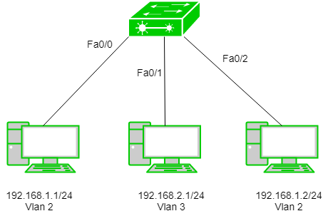

Virtual LAN (VLAN) is a concept in which we can divide the devices logically on layer 2 (data link layer). Generally, layer 3 devices divides broadcast domain but broadcast domain can be divided by switches using the concept of VLAN.
A broadcast domain is a network segment in which if a device broadcast a packet then all the devices in the same broadcast domain will receive it. The devices in the same broadcast domain will receive all the broadcast packet but it is limited to switches only as routers don’t forward out the broadcast packet.To forward out the packets to different VLAN (from one VLAN to another) or broadcast domain, inter Vlan routing is needed. Through VLAN, different small size sub networks are created which are comparatively easy to handle.
VLAN ranges –
- VLAN 0, 4095:These are reserved VLAN which cannot be seen or used.
- VLAN 1:It is the default VLAN of switches. By default, all switch ports are in VLAN. This VLAN can’t be deleted or edit but can be used.
- VLAN 2-1001: This is a normal VLAN range. We can create, edit and delete these VLAN.
- VLAN 1001-1005: These are CISCO defaults for fddi and token rings. These VLAN can’t be deleted.
- Vlan 1006-4094: This is the extended range of Vlan.
Configuration –
We can simply create VLANs by simply assigning the vlan-id and Vlan name.
#switch1(config)#vlan 2 #switch1(config-vlan)#vlan accounts
Here, 2 is the Vlan I’d and accounts is the Vlan name. Now, we assign Vlan to the switch ports.e.g-
Switch(config)#int fa0/0 Switch(config-if)#switchport mode access Switch(config-if)#switchport access Vlan 2
Also, switchport range can be assigned to required vlans.
Switch(config)#int range fa0/0-2 Switch(config-if)#switchport mode access Switch(config-if) #switchport access Vlan 2
By this, switchport fa0/0, fa0/1, fa0-2 will be assigned Vlan 2.
Example –

Assigning IP address 192.168.1.1/24, 192.168.1.2/24 and 192.168.2.1/24 to the PC’s. Now, we will create Vlan 2 and 3 on switch.
Switch(config)#vlan 2 Switch(config)#vlan 3
We have made VLANs but the most important part is to assign switch ports to the VLANs .
Switch(config)#int fa0/0 Switch(config-if)#switchport mode access Switch(config-if) #switchport access Vlan 2 Switch(config)#int fa0/1 Switch(config-if)#switchport mode access Switch(config-if) #switchport access Vlan 3 Switch(config)#int fa0/2 Switch(config-if)#switchport mode access Switch(config-if) #switchport access Vlan 2
As seen, we have assigned Vlan 2 to fa0/0, fa0/2 and Vlan 3 to fa0/1.
Advantages –
- performance –The network traffic is full of broadcast and multicast. VLAN reduces the need to send such traffic to unnecessary destination.e.g-If the traffic is intended for 2 users but as 10 devices are present in the same broadcast domain therefore all will receive the traffic i.e wastage of bandwidth but if we make VLANs, then the broadcast or mulicast packet will go to the intended users only.
- formation of virtual groups – As there are different departments in every organisation namely sales, finance etc., VLANs can be very useful in order to group the devices logically according to their departments.
- security – In the same network, sensitive data can be broadcast which can be accessed by the outsider but by creating VLAN, we can control broadcast domains, set up firewalls, restrict access. Also, VLANs can be used to inform the network manager of an intrusion. Hence, VLANs greatly enhance network security.
- Flexibility – VLAN provide flexibility to add, remove the number of host we want.
- Cost reduction – VLANs can be used to create broadcast domains which eliminate the need for expensive routers.
- By using Vlan, the number of small size broadcast domain can be increased which are easy to handle as compared to a bigger broadcast domain.